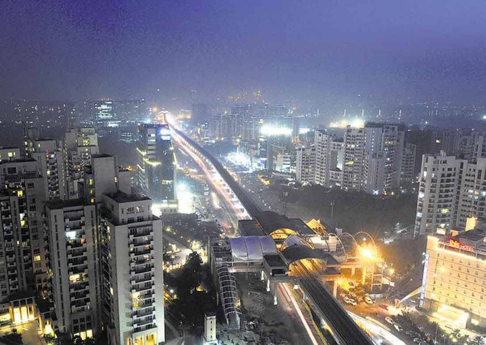

GURGAON
Gurgaon is a city just southwest of New Delhi in northern India. It’s known as a financial and technology hub. The Kingdom of Dreams is a large complex for theatrical shows. Sheetala Mata Mandir is an orange-and-white-striped Hindu temple. The Vintage Camera Museum showcases cameras and prints spanning a century. West of the city, Sultanpur National Park is home to hundreds of bird species.
KALESAR NATIONAL PARK
Kalesar is a popular destination for leopards, panthers, elephants, red jungle fowl and bird-watching. This forested area in the Shivalik foothills is covered primarily with sal with smattering of Semul, Amaltas and Bahera trees as well. Wildlife jeep safaris are available on 3 tracks. Kalesar National Park offers a host of activities such as Fishing, Trekking, Sight Seeing, Swimming, Bird Watching and Safari. The park is located in the Yamuna nagar district of the state of Haryana. It is about 150 Km away from Chandigarh. The park is situated in the foothills of Shiwalik ranges of Himalayas.
KARNAL

Karnal is a city located in the state of Haryana, India and is the administrative headquarters of Karnal District. It was used by East India Company army as a refuge during the Indian Rebellion of 1857 in Delhi. The Battle of Karnal between Nader Shah of Persia and the Mughal Empire took place in this city in 1739.
KURUKSHETRA

Kurukshetra is a city in the north Indian state of Haryana. It's known as the setting of the Hindu epic poem the "Mahabharata." The text's great battle is depicted in a large diorama at the Kurukshetra Panorama and Science Centre. West of the city, the town of Jyotisar is a pilgrimage site where, according to the "Mahabharata," the sacred "Bhagavad Gita" scripture was first delivered.
MORNI HILLS
Morni is a village and tourist attraction in the Morni Hills at the height of 1,267 metres in the Panchkula district of the Indian state of Haryana. It is located around 45 kilometres from Chandigarh, 35 kilometres from Panchkula city and is known for its Himalayan views, flora, and lakes.
PANCHKULA
Panchkula is a planned city and district headquarter in the Panchkula district, part of Ambala division in Haryana, India. The origin of the name Panchkula came from the place where five irrigation canals meet. It forms a part of an adjoining area to the Chandigarh, Mohali and Zirakpur.
PANIPAT
Panipat is a historic city in Haryana, India. It is 95 km north of Delhi and 169 km south of Chandigarh on NH-1. The three major battles fought in 1526, 1556 and 1761 took place near the city. The city is famous in India as the "City of Weavers" and "Textile City".